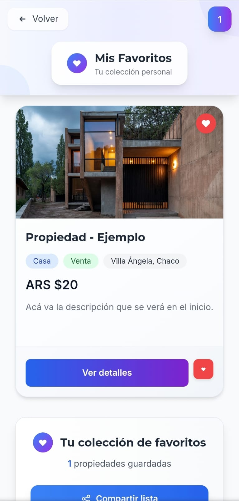

Demo de Ubify
Vista previa de la plataforma
Así es como se verá Ubify cuando esté listo
🎉 ¡Primera publicación GRATIS!
1
Página Principal
Búsqueda de Propiedades

Características: Filtros avanzados, mapa interactivo, vista de lista y tarjetas, búsqueda por ubicación
2
Detalle de Propiedad
Información completa

Características: Galería de fotos, descripción detallada, mapa de ubicación, botón de contacto directo
3
Favoritos
Guardar propiedades
Características: En el corazón hacés clic y podés guardar las propiedades para ver después.
4
Versión Móvil
Diseño Responsive

Inicio

Detalles

Favoritos
Características: Diseño responsive, navegación táctil, carga rápida, funcionalidad completa
쯊e gusta lo que ves?
¡Sé de los primeros en usar Ubify cuando esté listo!